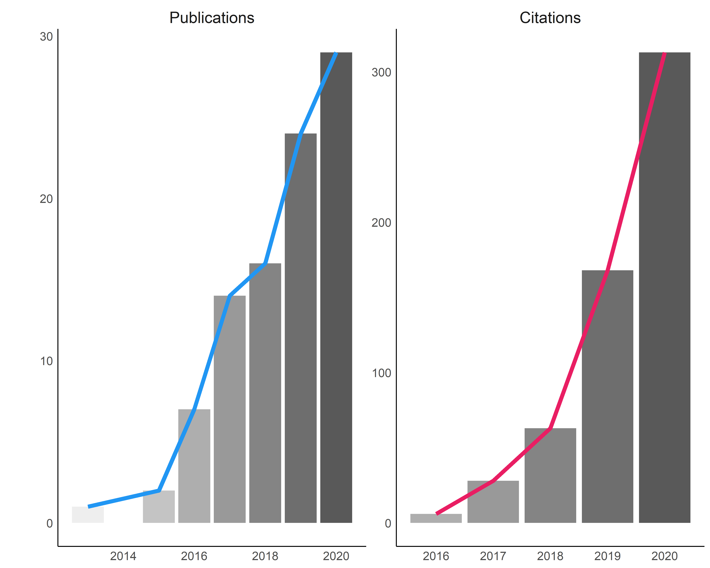

You can download the pdf version of my CV by clicking on the link below:
| Position | Journal | |
|---|---|---|
| 2020–present | Associate Editor | Frontiers in Psychology: Quantitative Psychology and Measurement |
The data was automatically retrieved from Google Scholar on the 24 May 2020.
| Metric | Score |
|---|---|
| Total number of publications | 26 |
| Total number of citations | 237 |
| Average number of publications / Year | 4 |
| Average number of citations / Year | 34 |
| h-index | 8 |
| i10-index | 8 |
The data is retrieved from the Google Scholar co-author list (that one must update manually on its scholar profile by clicking the + button and accept the suggestions), thus not 100% accurate (e.g., co-authors without a scholar profile are not listed).
Note: Electronic versions are provided to ensure timely dissemination of academic work. They can be downloaded for noncommercial purposes. Copyright resides with the respective copyright holders as stated in each article. The files may not be reposted without permission from copyright holders.
2020
Makowski, D., Pham, T., Lau Z. J., Leow D., Raine A., & Chen, S. H. (under review). The Structure of Deception: Validation of the Lying Profile Questionnaire.
Girardeau, J. C., Blondé, P., Makowski D., Abram, M., Piolino, P., & Sperduti, M. (2020). The impact of state and dispositional mindfulness on prospective memory: A virtual reality study. Consciousness and Cognition, 81, 102920.
2019
Makowski, D., Sperduti, M., Lavallée, S., Nicolas, S., & Piolino, P. (2019). Adaptation and Validation of a Short French Version of the Affective Style Questionnaire. International Journal of Cognitive Therapy, 1-13.
Makowski, D., Ben-Shachar, M. S., Chen, S. H., & Lüdecke, D. (2019). Indices of Effect Existence and Significance in the Bayesian Framework. Frontiers in Psychology, 10, 2767.
Makowski, D., Sperduti, M., Blondé, P., Nicolas, S., & Piolino, P. (2019). The heart of cognitive control: Cardiac phase modulates processing speed and inhibition. Psychophysiology, e13490.
Makowski, D., Ben-Shachar, M., & Lüdecke, D. (2019). bayestestR: Describing effects and their uncertainty, existence and significance within the Bayesian framework. Journal of Open Source Software, 4(40), 1541.
Lüdecke, D., Waggoner, P., & Makowski, D. (2019). insight: A unified interface to access information from model objects in R. Journal of Open Source Software, 4(38), 1412.
Makowski, D., Sperduti, M., Pelletier, J., Blondé, P., La Corte, V., Arcangeli, M., Zalla, T., Lemaire, S., Dokic, J., Nicolas, S., & Piolino, P. (2019). Phenomenal, Bodily and Brain Correlates of Fictional Reappraisal as an Implicit Emotion Regulation Strategy. Cognitive, Affective, & Behavioral Neuroscience, 19(4), 1-21.
Makowski, D.*, Sperduti, M.*, Lavallée, S., Nicolas, S. & Piolino, P. (2019). Dispositional mindfulness attenuates the emotional attentional blink. Consciousness & Cognition, 67, 16–25.
2018
Makowski, D (2018). The psycho Package: An Efficient and Publishing-Oriented Workflow for Psychological Science. Journal of Open Source Software, 3(22), 470.
2017
Makowski, D., Dutriaux, L. (2017). Neuropsydia.py: A Python Module for Creating Experiments, Tasks and Questionnaires, Journal of Open Source Software, 2(19), 259.
Tuena, C., Serino, S., Gaston-Bellegarde, A., Orriols, E., Makowski, D., Riva, G. & Piolino, P. (2017). How Virtual Embodiment Affects Episodic Memory Functioning: a Proof-of-Concept Study, Annual Review of Cybertherapy and Telemedicine, 15, 93-107.
Sperduti, M., Armougum, A., Makowski, D. & Piolino, P. (2017). Interaction between attentional systems and episodic memory encoding: the impact of conflict on binding of information, Experimental Brain Research, 235(12), 3553-3560.
Makowski, D.*, Sperduti, M.*, Nicolas, S. & Piolino, P. (2017). “Being there” and remembering it: Presence improves Memory Encoding. Consciousness & Cognition, 53, 194–202.
Nicolas, S., & Makowski, D. (2017). Centenaire Ribot (I). La réception de l’oeuvre de Théodule Ribot chez l’éditeur Ladrange (1870-1873). Bulletin de Psychologie, 70(3), 163-178.
Sperduti, M., Makowski, D., Blondé, P. & Piolino, P. (2017). Méditer pour bien vieillir ? Les possibles bienfaits des pratiques méditatives sur le déclin cognitif lié à l’âge | Meditation and successful aging: can meditative practices counteract age-related cognitive decline?, Gériatrie et Psychologie Neuropsychiatrie du Vieillissement, 15(2), 205-13.
Sperduti, M.*, Makowski, D.*, Arcangeli, M., Wantzen, P., Zalla, T., Lemaire, S., Dokic, J., Pelletier, J. & Piolino, P. (2017). The Distinctive Role of Executive Functions in Implicit Emotion Regulation. Acta Psychologica, 173, 13-20.
2016
Nicolas, S., & Makowski, D. (2016). Can mental fatigue be measured by Weber’s compass? Alfred Binet’s answer on the value of aesthesiometry (tactile sensitivity) as an objective measure of mental fatigue. European Yearbook of the History of Psychology, 2, 11-46.
Sperduti, M., Makowski, D., & Piolino, P. (2016). The protective role of long-term meditation on the decline of the executive component of attention in aging: a preliminary cross-sectional study. Aging, Neuropsychology, and Cognition, 23(6), 691-702.
Sperduti, M.*, Arcangeli, M.*, Makowski, D., Wantzen, P., Zalla, T., Lemaire, S., Dokic, J., Pelletier, J. & Piolino, P. (2016). The paradox of fiction: Emotional response toward fiction and the modulatory role of self-relevance. Acta psychologica, 165, 53-59.
2015
Makowski, D., Sperduti, M., Blanchet, S., Nicolas, S. & Piolino, P. (2015). Régulation Emotionnelle face au Déclin Cognitif dans le Vieillissement : Un Faux Paradoxe ? | Emotion regulation and the cognitive decline in aging: beyond the paradox. Gériatrie et Psychologie Neuropsychiatrie du Vieillissement, 13(3), 301-8.
2018
Makowski, D., Sperduti, M., Nicolas, S. & Piolino, P. (2017). Interindividual Determinants of Emotion Regulation through Fiction. 2ème Congrès Francophone de TCC, 14-16 June, Geneva, Switzerland.
Makowski, D. (2018, invited). How Reality can Modulate Memory and Emotions. CRPCPO’s monthly seminar, 23 March, Amiens, France.
Makowski, D., Sperduti, M., Nicolas, S. & Piolino, P. (2018). Engagement in Fiction as an Altered State of Consciousness. 6th Mind, Brain & Body Symposium, 15-16 March, Berlin, Germany.
2017
Makowski, D., Sperduti, M., Nicolas, S. & Piolino, P. (2017). Vers la thérapie neurocognitive ? L’apport des neurosciences affectives dans la TCC. 45ème congrès de l’AFTCC, 14-16 December, Paris, France.
Sperduti, M., Makowski, D. & Piolino, P. (2017). The Role of Self-Relevance and Interindividual Variability in Executive Functions in Implicit Emotion Regulation. International Society for the Study of Interindividual Differences (ISSID), 24-28 July, Warsaw, Poland.
Makowski, D., Sperduti, M. & Piolino, P. (2017). The Distinctive Effect of Emotion Regulation andMindfulness on Attentional Capture. 1ère Journée Scientifique des Jeunes Chercheurs du Centre de Recherches sur la Cognition et l’Apprentissage, 8 June, Poitiers, France.
2016
Makowski, D., Sperduti, M. & Piolino, P. (2016).”Being there” and Remembering it: Presence en-hances Encoding in Memory. International Congress On Memory (ICOM), 17-22 July, Budapest, Hungary.
Makowski, D., Sperduti, M. & Piolino, P. (2016). The Sense of Reality as a feature of proto-Consciousness, its Alteration and Generation induced by Fictional Worlds. Literary States of Consciousness, 2 June, Paris, France.
Makowski, D., Sperduti, M. & Piolino, P. (2016). Does Mindfulness ability differently affect Implicit and Explicit Emotion Regulation? 2nd International Conference on Mindfulness (ICM), 11-15 May, Roma, Italy.
Sperduti, M., Makowski, D. & Piolino, P. (2016). Does mindfulness enhance interoception? Dissociation between different interoceptive abilities. 2nd International Conference on Mindfulness, 11-15 May, Roma, Italy.
2015
Makowski, D., Sperduti, M. & Piolino, P. (2015). Bon et Mauvais Régulateurs Emotionnels: Un Rôle Spécifique de l’Inhibition ? 56è Congrès National de la Société Française de Psychologie (SFP), 2-4 September, Strasbourg, France.
Makowski, D., Sperduti, M., Pelletier, J. & Piolino, P. (2015). Régulation émotionnelle et Self Control : De la recherche Fondamentale à l’Application Clinique. 1er Congrès Francophone de TCC, 27-29 May, Lyon, France.
2014
Makowski, D., Sperduti, M., Arcangeli, M., Pelletier, J. & Piolino, P. (2014). From Philosophy to the Rehabilitation of Psychiatric Patients: Fiction/Reality, Emotion et Cognitive Control. Journée d’hiver de l’IUPDP, 19 December, Boulogne-Billancourt, France.
Makowski, D., Sperduti, M. & Piolino, P. (2014). L’émotion face à la fiction : l’étude de patientsschizophrènes éclaire le paradoxe de la fiction. 27 June, Fête de la Recherche, Boulogne-Billancourt,France.
2013
Makowski, D., & Rossi, S. (2013). Le jugement esthétique chez l’enfant. Journées Neurosciences, Esthétique, et Complexité, 28 September, Paris, France.
I’ve already given academic lectures (total hours since 2014: 400) on the following topics (see CV for details):